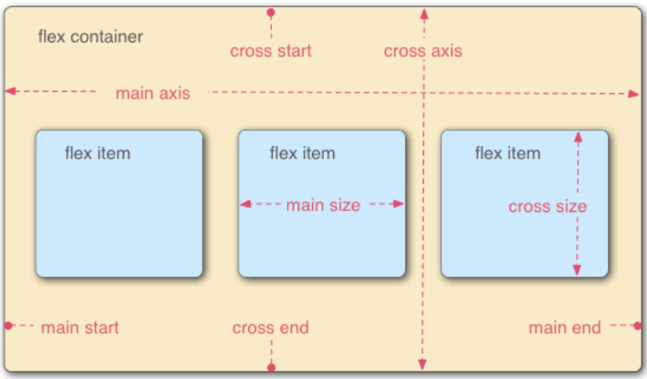
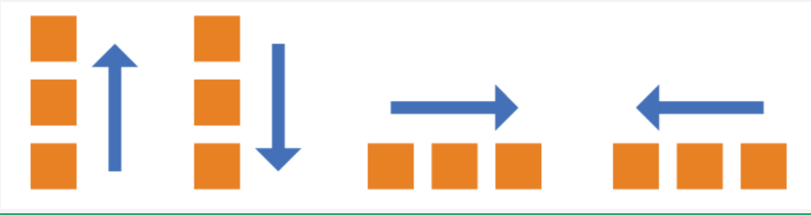

分享人：李晓斐
目录
1.背景介绍
2.知识剖析
3.常见问题
4.解决方案
5.编码实战
6.扩展思考
7.参考文献
8.更多讨论
CSS中有相当多的属性将长度作为值。盒模型中这些属性是显而易见的：宽度，高度，边距，填充，边框。但也有很多其他的：例如字体的大小和间距。什么是CSS中被接受的“长度”属性？有不少。 传统的项目开发中，我们只会用到px、%、em这几个单位，它可以适用于大部分的项目开发，并且拥有比较良好的兼容性。但是你知道吗？从css3开始，浏览器对逻辑单位的支持又提升到了另外一个境界，增加了rem、vh、vw、vm等一些新的长度单位，我们可以利用这些新的单位开发出比较良好的响应式页面，随之覆盖多种不同分辨率的终端，包括移动设备等。现在让我们来认识一下这些长度单位。
px-像素可能最好被认为是“设备像素”，px是指屏幕上尺寸大小,是确定的尺寸.这个长度与您正在看的显示屏中的文字屏幕像素没有任何关系。它实际上是一种angular测量。 px像素（Pixel）。相对长度单位。像素px是相对于显示器屏幕分辨率而言的。
em-其实就是一种排版的测试单位，而且他的由来还有一段小故事，关于这段小故事我就不和大家说了，因为大家都不是来听我讲故事的，我想大还是喜欢知道他在CSS中的那些事。 在CSS中，“em”实际上是一个垂直测量。一个em等于任何字体中的字母所需要的垂直空间，而和它所占据的水平空间没有任何的关系，因此： 如果字体大小是16px，那么1em=16px em其实就是一种排版的测试单位，而且他的由来还有一段小故事，关于这段小故事我就不和大家说了，因为大家都不是来听我讲故事的，我想大还是喜欢知道他在CSS中的那些事。 在CSS中，“em”实际上是一个垂直测量。一个em等于任何字体中的字母所需要的垂直空间，而和它所占据的水平空间没有任何的关系，因此： 如果字体大小是16px，那么1em=16px.在所有现代浏览器中，其默认的字体大小就是“16px”
rem是一个相对的单位，像em，但它总是相对于“根”元素（即：root ）。这极大地简化了与相关长度单位的合作。 值得注意的浏览器支持问题：在IE 8，Safari 4或iOS 3.2中不起作用。 对于em和rem的区别一句话概括：em相对于父元素，rem相对于根元素。
%-percentage-以百分比形式设置的长度基于父元素的相同属性的长度。例如，如果一个元素以450px宽度呈现，宽度设置为50％的子元素将呈现225px。
vw-这是“视口宽度”单位。 1vw等于视口宽度的1％。它与百分比类似，不同之处在于，所有元素的值都保持一致，无论其父元素或父元素宽度如何。有点像rem单位总是相对于根。 尺寸类型是这里的主要用例。请参阅视口尺寸排版。 值得注意的浏览器支持问题：除了最新的iOS 6以外，不支持任何移动浏览器。这适用于所有与视口相关的长度单位。 vh-这与vw（视口宽度）单位相同，只是它基于视口高度。 vmin and vmax：关于视口高度和宽度两者的最小值或者最大值。 比如，浏览器的宽度设置为1200px，高度设置为800px， 1vmax = 1200/100px = 12px， 1vmin = 800/100px = 8px。如果宽度设置为600px,高度设置为1080px, 1vmin就等于6px, 1vmax则未10.8px。 有一个元素，你需要让它始终在屏幕上可见： .box { height: 100vmin; width: 100vmin; }
浏览器的默认高度? 一般为16px. 为什么用62.5%作为body的默认样式? 16px62.5%=10px.* 那么为什么一般多是 16px *625% = 100px; 《响应式Web设计实践》中提到过这一点，桌面浏览器默认页面字体大小是16px，这种情况下设置成具体像素大小或者对应的百分比，看起来的效果是一样的，但是其他类型的设备的默认字体大小不一定是16px,特别是高分辨率的设备，16px大小的字体在它们上面看起来会非常小，所以不能在body上设置具体像素值，设置成百分比，可以按照设备的基准字体大小给编写的网页设置好最适合用户浏览的字体大小。 书中原文：最重要的不是屏幕实际的像素大小，屏幕上文字的可读性才是最重要的 因为设了62.5%后就有1rem = 10px，便于用rem来指定元素的尺寸，这样响应式的时候可以直接改变font-size而无需计算其他各种样式中出现的尺寸了。 用rem定义尺寸的另一个好处是更能适应缩放／浏览器设置字体尺寸等情况（因为rem相对于字体大小，会同步改变）。
答案是可以的，一个元素可以是一个display的子元素同时也是另外一个display的父元素。
感谢大家观看
BY : 李晓斐